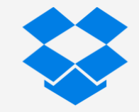
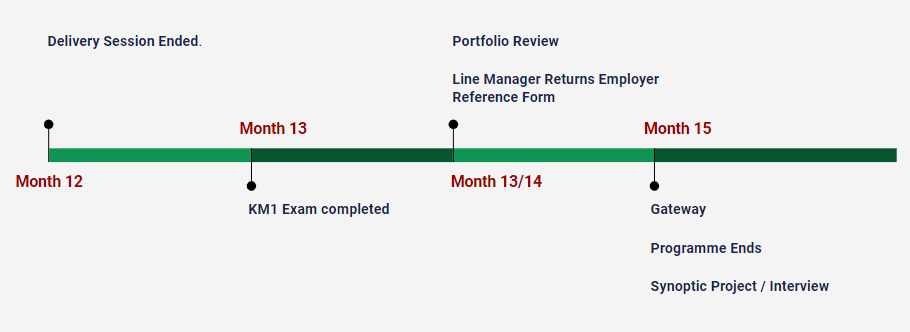
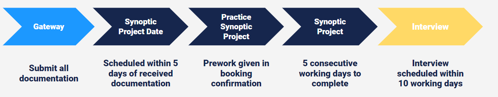

Understand the benefits and challenges of Data Synchronization
Understand the Gateway process
Data Synchronization
What is Data Synchronization? Data synchronization is the process of keeping two or more systems in sync so that any updates in one are automatically reflected in the other to ensure consistency.
Benefits of Data Synchronization
Benefits
Increased accessibility and availability of data
Increased security and regulatory compliance
Avoids data conflicts
More efficient decision making from using up-to-date data
Methods of Data Synchronization
File Synchronization
Version Control
Distributed File System
Mirror Computing
Methods
File Synchronization
The process of ensuring that files in two or more locations are updated in real time via certain rules. It should occur automatically and prevent duplication of data.
Features
Can be done locally or in the Cloud
Updates your files in real time
Two-way synchronization
Allows for collaboration between developers
Detects conflicts

Version Control
Synchronization occurs over multiple devices, allowing users to simultaneously edit their own version. Updates are reflected when the versions are pulled together.
Features
Can be version or revision control
Allows movement between different revisions
All changes are tracked
Allows for different team members to develop different aspects of the project
File synchronization allows for simultaneous working on a project
i.e. any updates are reflected instantly for all users
Version control allows developers to work independently on a project and then update each other's versions when ready
Most version control tools integrate some form of file synchronization
Distributed File System
Allows users in different locations to access the same files and systems through a common file system, for example over a local area network (LAN).
Mirror Computing
A mirror is an exact copy of a dataset. It is used to provide different sources with an exact copy of a dataset. More useful for backing up data.
Activity
Discuss in breakout rooms:
Any data synchrnoization systems you use in your role and organisation
Whether you think it is important for your organisation to implement a data synchronization system
Challenges of Data Synchronization
Challenges
Security
Management
Data Quality
Data Format
Performance
Data Ownership
Security
The Issue
Data breaches and data leaks
Ensuring data sharing conforms to regulatory standards
Could lead to a loss of reputation and/or revenue
Security
The Solution
Put in place data policies and access requirements
All synchronization must follow security needs
Implement data encryption
Management
The Issue
Inconsistencies in synchronization system updates
Difficult to catch errors during synchronization activities
Management
The Solution
Data Management systems put in place for managing and integrating data in real time
Data Quality
The Issue
Data integrity is easily compromised due to access from multiple devices
Data Quality
The Solution
Implement constant data validation strategies into synchronization tools across all sources
Data Format
The Issue
Different data formats lead to complexity issues
Data Format
The Solution
Ensure data format compliance is consistent across organisation by having policies and templates
Performance
The Issue
Lag time during peak useage of if one of the synchronization steps fails
Performance
The Solution
Ensure proper capacity planning is put in place and synchronization activities made a priority
Data Ownership
The Issue
Difficult to track changes if anyone in an organisation has access to the file/datasets
Data Ownership
The Solution
Restrict access to only those who need it and have a referral process so others can suggest changes
Recap
Learning Objectives
Understand the benefits and challenges of Data Synchronization
Understand the Gateway process
What Next?

BCS Data Analytics Tools Exam (KM1)
Revision pack will be shared with you shortly
The exam assesses content delivered in the second half of the course as well as some SQL, R and python concepts
Revision session will be organised by coach prior to the exam
Member of MultiVerse exam team will be on contact to book your exam
Gateway
The Format
Gateway will be undertaken remotely via Zoom, you must ensure that your evidence is loaded onto applied prior to the meeting.
The meeting will be attended by yourself, your line manager (or other representative from you company).
What is needed before Gateway?
100% OTJ
Portfolio & tracker completed
Employer reference completed
Both exam certificates uploaded
What happens during Gateway?
Gateway is simply a meeting. We will go through and confirm all evidence has been uploaded before discussing next steps and then:
Submitting your Gateway Checklist (we send you the link)
Signing your Gateway Declaration form (emailed the week of Gateway)
And then the LEARNING portion of your apprenticeship is over!
What happens after Gateway?
Now the ASSESSMENT part of your apprenticeship begins! You will undertake the remaining parts of the End Point Assessment:
Synoptic Project
Competency Interview
Once these are completed the assessor will assign you a grade.
What happens if I don't pass?
In the (very) unlikely event that you do not pass the EPA first time, the assessor will give detailed feedback on the areas of the standards that did not have sufficient evidence. We will work together to address the shortfalls before resubmitting.
Synoptic Project

What is it?
The Synoptic Project is a chance for the assessor to see your end-to-end analytical skills. You will be simulating 6 elements of a standard piece of analysis:
What is it?
Data Discovery
Data Preparation
Model Planning (and investigation)
Building
Testing
Communication
Scenario
You are an apprentice working for World Wide Importers Ltd.
Your company buys products from global suppliers and then resells them (B2B) to clients who in turn sell to their customers
The Senior Leadership Team need you to provide insightful analysis so they can make strategic decisions in the future
You will be provided with CSV files that contain company data
You will be given several tasks to complete, which will be provided in the project objectives that you will receive in the project.
You will need to plan and prioritise your approach to the tasks and be able to explain your decisions, completing the tasks to the best of your ability
The information you will be given in the project brief is sufficient for you to approach the tasks
However, you will be expected to make assumptions and decisions to complete the task
You will have a maximum of 5 days to complete the project
Equipment Required
A computer with access to the internet and your preferred data analysis software/tools
To complete these tasks use any programming language, software or tool you like but remember to document what you have used and why
Activity
Discuss in breakout rooms:
What is the GOAL of the task?
What are your required OUTPUTS?
What sort of analytics could be asked for?
What data would you ideally have?
Are there any assumptions you need to make?
What tools would you consider using any why?
What is the format?
Data Discovery
A short review and document of key fields to be used for analysis
Data Discovery
Summarise the question asked
State the metrics you are using and which column names (in the data) they correspond to
Explain why you have chosen these fields
State your assumptions
Data Preparation
A short summary of the processes used to extract, transform and load the data
Data Preparation
This is your exploratory data analysis section
What trends did you see?
Document any issues with data quality
What did you do to resolve these? Why did you choose those methods?
What methods were best for your purpose? How did you decide?
Model Planning
Document the final selected models, charts and reports
Model Planning
What model did you intend to use for your investigation? What features did you plan to select?
Why did you come to this decision?
What visualisations did you intend to use to demonstrate this?
Why did you choose them?
Building
Build the reports/models to answer the questions
Building
Do the analysis
Train and test the model
Pick the best version of your model
Visualise the results
Have you answered all of the questions with these?
Can you show off any relevant additional skills?
Testing
Document how you have tested and validated the results
Testing
Are your results significant? What statistical tests have you performed to show this?
Have the assumptions you made about the data invalidate your conclusions?
How do you know your results are valid?
Communication
Compile a short report answering the questions asked in the Project Objectives section
Communication
Answer the questions
Include screenshots of your visualisations where appropriate
Add in any additional analysis you would like considered
Check you answered the questions (again...thoroughly)
Plan your project to either:
Show off your strengths (what is your USP?)
Target a standard that has weak portfolio evidence
A final piece of advice...
READ THE INSTRUCTIONS
Interview
What is it?
An opportunity for the Assessor to ask you for further details, which has three main uses:
Allows you to show off
Confirms the skills you've demonstrated in your portfolio
Demonstrate a 'weaker' standard
Welcome and introductions
Photo Id check
Overview of purpose and structure
You will then be asked to explain your job role, type of tasks in a typical week and the type of environment
The Structure
Structured Discussion
Explore what you have done and how you've done it
Portfolio, synoptic project and employer reference form
Specific comments documented
Explore and identify the range and depth of knowledge, skills and behaviours
Confirm and validate the quality of your work
Opportunity to provide further evidence (what else have you been working on?)
How should you answer?
Use the STAR format, but sometimes it may not be necessary to use all four sections.
Use the assessor's question to determine the type of answer expected
Why was it important to perform this analysis?
How did you ensure your analysis was correct?
How did you ensure your insights were valid?
What was the impact of...?
Activity
In pairs pick one of the purposes of the interview:
Allows you to show off
Confirm the skills you've demonstrated in your portfolio
Demonstrate a 'weaker' standard
Devise a question for your partner and ask them
Learning Objectives
Understand the benefits and challenges of Data Synchronization